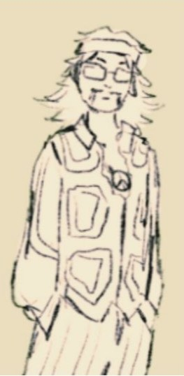

Incident Report: Case File 0048-IN
Visual Record:
Emerald Haze and Associated individual, "Shaggy"
Description:
Resources used by Runesmiths for development of inventions have been mistakenly exchanged for an unrecorded herbal-like resource labelled as LEMEZEEDATRUFIL. AVOID DIRECT CONTACT WITH THE RESOURCE. Incident recorded on 08/22/1975.
LEMEZEEDATRUFIL (LZT)
-
Morphology:
Leaves are semi-transparent and green with silver-trimmed edges.
-
Chemical Composition:
Enchanted with Aether Magic and high concentrations of BERYL LITHOMETEORALIS “EMERALD HAZE”.
-
Initial Effects:
Dizziness and vertigo.
Nausea and gastrointestinal distress.
Blurred or "fractured" vision, described as seeing shimmering or geometric patterns.
-
Severe Effects:
-
Neurological Spasms:
Occurring without warning and often accompanied by intense, localized pain.
-
Cognitive Disassociation:
A sensation of detachment from reality, memory lapses, and moments of unresponsiveness lasting several minutes.
-
Cardiac Irregularities:
Tachycardia and arrhythmias have been reported in some individuals, with a few cases escalating to cardiac arrest.
-
Hallucinations:
Witness, Guiliana DeLuca, reports of a victim gaining a brief moment of clarity describing vivid, immersive hallucinations involving ethereal landscapes and encounters with "entities".
-